<!DOCTYPE HTML>
<html>
	<head>
		<title>UMBC Wushu</title>
		<meta charset="utf-8" />
		<meta name="viewport" content="width=device-width, initial-scale=1" />
		<link rel="stylesheet" href="assets/css/main.css" />
	</head>
	<body>

		<!-- Header -->
			<section id="header">
				<header>
					<span class="image avatar">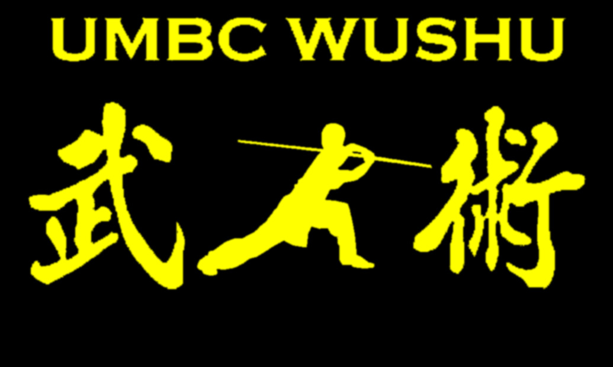</span>
				</header>
				<nav id="nav">
					<ul>
						<li><a href="#one" class="active">About</a></li>
						<li><a href="#two">Schedule</a></li>
						<li><a href="#three">Officers</a></li>
						<li><a href="#four">Coaches</a></li>
						<li><a href="#five">Gallery</a></li>
						<li><a href="#six">FAQ</a></li>
						<li><a href="#seven">Contact</a></li>
					</ul>
				</nav>
				<footer>
					<ul class="icons">
						<li><a href="https://www.facebook.com/groups/umbcwushu/" class="icon fa-facebook"><span class="label">Facebook</span></a></li>
						<li><a href="mailto:wushu@umbc.edu" class="icon fa-envelope"><span class="label">Email</span></a></li>
					</ul>
				</footer>
			</section>

		<!-- Wrapper -->
			<div id="wrapper">

				<!-- Main -->
					<div id="main">

						<!-- One -->
							<section id="one">
								<div class="container">
									<header class="major">
										<h2>UMBC Wushu</h2>
										<!--<p>About</p> -->
									</header>
									<p></p>
								</div>
							</section>

						<!-- Two -->
						<section id="two">
							<div class="container">
								<h3>Schedule</h3>
								<p>Modern Wushu practices run between 7:00 PM and 9:00 PM on Mondays and Wednesdays in the RAC backetball courts.</p>
								<p>Traditional practices are held between 7:00 PM and 9:00 PM on Tuesdays and Thursdays, also in the RAC backetball courts.</p>
							</div>
						</section>

						<section id="three">
							<div class="container">
								<h3>Officers</h3>
								<p>
									President: Andrew Hacklander<br />
									Vice President: Thomas Burnett<br />
									Secretary: Irene Javier<br />
									Treasurer: Kwynn Johnson<br />
									Historian: Shirley Lu<br />
									Webmaster: Chris Hamer<br />
								</p>
							</div>
						</section>

						<section id="four">
							<div class="container">
								<h3>Coaches</h3>
								<div class="whitetxtbox">
								     <p class="paragraphtxt"><span class="paragraphtxt"></span></p>
								     <p class="paragraphtxt"><span class="paragraphtxt">
								     <div style="height:500px;width:800px;border:1px solid #ccc;font:16px/26px Georgia, Garamond, Serif;overflow:auto;">
								     <b>Matthew Lee</b><br /><br />
								     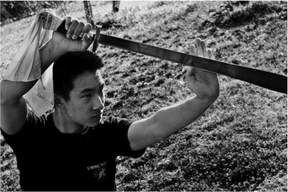<br /><br />
								     Status: Current UMBC Wushu Coach, actively training<br />
								Specialized in: Changquan (long fist), gunshu (staff), daoshu (broadsword), shuangdao (double broadsword)<br /><br />


								Résumé:
								<ul>
									<li>2008 US Wushu Junior C Team Member – 2nd place Junior B Male Staff</li>
									<li>2008 US Capitol Classics China Open – 1st Place Contemporary Wushu Broadsword (Short Weapon) and Contemporary Wushu Forms (Changquan) 13-17 M/F and Contemporary Wushu Forms (Changquan) 13-17 M/F</li>
									<li>2010 US Wushu Junior Team Trials Top 5 – 5th place Junior A Male Changquan, 5th place Junior A Male Broadsword, 4th place Junior A Male Staff</li>
									<li>2011 NJ International Wushu-Kungfu Tournament Gold Medalist – 1st place Longfist, 1st place Staff, 1st place Broadsword (2nd place All-Around Champion)</li>
									<li>2011 US Wushu C Team Member – US National Broadsword Champion (1st place Broadsword), 8th place Staff</li>
									<li>Qualified to represent USA in the 9th Pan-American Wushu Championships (Dao/gun representative), placed Top 10 – 5th place Adult Male Chang Quan, 6th place Adult Male Daoshu, 5th place Adult Male Gunshu</li>
									<li>2013 US Wushu C Team Member – 4th place Adult Adv. Male Broadsword, 4th place Adult Adv. Male Staff</li>
									<li>18th Collegiate Wushu Tournament Gold and Silver Medalist – 2nd place Advanced Male Adult Changquan, 1st place Advanced Male Adult Broadsword, 1st place Advanced Male Adult Staff</li>
									<li>10th Pan American Wushu Championships Bronze Medalist – 3rd place Men’s Daoshu – Optional</li>
									<li>2015 US Wushu C Team Member – 5th place Male 3rd Compulsory Changquan, 5th place Male Staff</li>
									<li>20th Annual Collegiate Wushu Tournament Triple Medalist – 2nd place Male Changquan Nandu, 3rd place Male Broadsword Advanced, and 3rd place Male Staff Advanced</li>
									<li>11th Pan-American Wushu Championships Gold Medalist – 5th place Men’s Gunshu, 1st place Men’s Compulsory Changquan, 6th place Men’s Daoshu</li>
								</ul>
								Matt began practicing Wushu at the age of 7 under US Wushu Academy.  He has held positions in national, international, and local modern Wushu competitions, and is currently training in Sanshou/Sanda and traditional Chen Style Taijiquan.  He is a three-time consecutive US Wushu Team member, and is continually trying to improve himself both as a competitive athlete and as a real martial artist.  He has previously represented UMBC Wushu at the 18th Collegiate Wushu Tournament to become a gold and silver medalist, and became a bronze medalist at the 10th Pan American Wushu Championships Most recently in his competitive career, he has represented UMBC Wushu at the 20th Annual Collegiate Wushu Tournament to become silver and bronze medalist, and has also become an international champion at the 11th Pan-American Wushu Championships.  He is also currently a writer for the Jiayoowushu.com site.  For UMBC Wushu, he was the first to introduce Sanshou practices as well as encourage the study of traditional Chinese martial arts, and focuses on the learning and promotion of all-around Wushu understanding, and real martial arts in general.
<br /><br /><br />

<b>Eric (Yixin) Geng</b><br /><br />
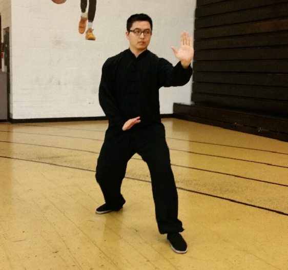<br /><br />

Status: Current traditional Wushu instructor<br />
Specialized in: Bajiquan, Baguataijiquan, Chaquan, Shilu Tan Tui, Erlangquan, Lianbuquan, Wuhuqinyanggun, Sancaijian<br /><br />
Eric Geng began training in traditional Wushu during grade school in Nanjing, China, under Master Ge Changlin, who in turn trained under the late renowned Wushu Grandmaster He Fusheng.  After grade school, Eric sought out Master Ge Changlin to continue his training, resulting in the vast knowledge of traditional Wushu styles he has today.  Upon Master Ge Changlin’s desire for Mr. Geng to promote traditional Chinese martial arts, Mr. Geng is a steadfast teacher of the traditional basics, principles, as well as the martial applications and fighting ideas of traditional Wushu.  The material taught can be traced back to the Nanjing Central Guoshu Institute.
<br /><br /><br />


								<b>Cameron Mozafari</b><br /><br />
								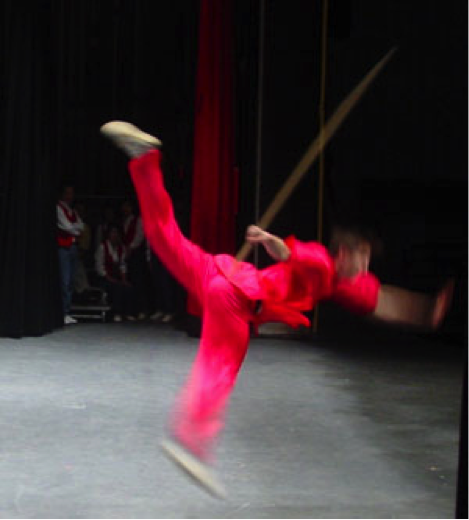<br /><br />

								Status: The Founder of UMBC Wushu, Former UMBC Wushu Coach, retired athlete, injured (practicing), returning coach<br />
Specialized in: Changquan (Long Fist), gunshu (staff), daoshu (broadsword), Tongbeiquan (through-the-back fist), pudao (horse cutter)<br /><br />
Résumé:
<ul>
<li>2002 SIDEKICK International Martial Arts Championship –  7th place Black Belt Weapons 16-17 (Boys/Girls) Division, 5th in Junior Black Belt Forms 16-17 Traditional (Boys/Girls) Division</li>
<li>2002 US Capitol Classics International Martial Arts Tournament – 6th place Black Belt Wushu 13-17 yrs Division ChangQuan and Long Weapon (Staff)</li>
<li>2002 Charlie Lee Nationals Presents The World Series of Martial Arts Tournament of Champions – one bronze, one 4th</li>
</ul>
The founder of UMBC Wushu, and a senior member of US Wushu Academy, as well one of the early coaches of UMBC Wushu, Cameron has demonstrated a clever and bilingual understanding of both Western and Chinese culture.  Although he is primarily a modern Wushu athlete, as well as a certified judge, Cameron is also a strong supporter of traditional Wushu as well as a strong critic of the current state of the sport, and pushes the idea of martial substance and content over simple performance.  He is currently pursuing a PhD in English at UMCP.
<br /><br /><br />


								<b>Mikey Tsai</b><br /><br />
								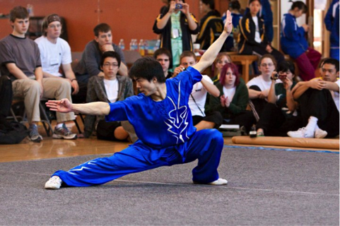<br /><br />


								Status: Former assistant coach, practicing, returning coach<br />
								Specialized in: Changquan (Long Fist), gunshu (staff), daoshu (broadsword), jiujiebian (nine-section whip)<br /><br />
								Résumé:
								<ul>
								<li>2006 US Wushu Junior B Team Member</li>
								<li>2007 US Wushu B Team Member – 5th place Changquan</li>
								<li>2008 US Capitol Classics China Open – Open Hand Forms Grand Champion, 2nd place Weapon Forms</li>
								<li>13th Annual Wushu Collegiates Gold Medalist – 1st place Advanced Male Broadsword</li>
								<li>2009 US Wushu B Team Member – 2nd place Broadsword, 3rd place Staff</li>
								<li>14th Annual Wushu Collegiates Bronze Medalist – 3rd place Advanced Male Broadsword, 3rd place Advanced Male Staff</li>
								<li>8th Pan-American Wushu Championships Gold Medalist – 1st place Adult Male Gunshu</li>
								<li>6th Annual University Wushu Games Silver Medalist – 2nd place Adult Adv. Male Changquan</li>
								<li>7th Annual University Wushu Games Bronze Medalist – 3rd place Adult Adv. Male Changquan</li>
								</ul>
								As a modern martial artist, Mikey did Taekwondo as a kid, and eventually transitioned into Wushu in his adult years under US Wushu Academy.  He specializes in modern Wushu Taolu, and has always been a staunch proponent of the martial art fundamentals in modern Wushu.  He is also a two-time consecutive US Wushu Team member.  Even after finally becoming an international champion at the 8th Pan-American Wushu Championships, Mikey continues to practice to become a well-rounded athlete, as well as work as a constructive coach.
<br /><br /><br />

								<b>Mac Colestock</b><br /><br />
								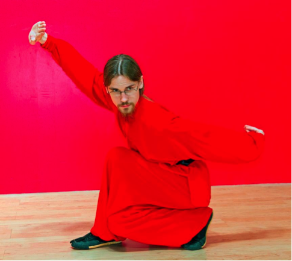<br /><br />
								Status: Current Chen Style Taiji Instructor, actively training, probably a wizard<br />
								Specialized in: Chen Style Taiji, Yang Style Taiji, Push Hands, Qigong, Northern Shaolin, contemporary Wushu<br /><br />

								Résumé:
								<ul>
								<li>Men’s Tai Chi Grand Champion at the 2012 ICMAC Fall Tournament in the Greater DC Area – Gold in Chen, Silver in Yang, Bronze in Other Style, Silver in Tai Chi Sword, Silver in Other Weapons</li>
								<li>Runner-up for Internal Grand Champion at Wong People 2012</li>
								<li>Consistent Gold and Silver Medalist for Chen, Yang, and Tai Chi Weapons categories at both national and internationally-ranked competitions</li>
								<li>Ranked third in USA for both Chen and Yang style Tai Chi in 2012 on the ICMAC circuit</li>
								<li>2013 Orlando, FL ICMAC – 3rd place Taiji Other Weapons, 1st place Traditional Taiji Straight Sword, 2nd place Traditional Chen Style Taiji</li>
								<li>2013 US International Kuo Shu Championship Tournament – 3rd place Adult Adv – Tai Ji – Chen Style Form – Men, 1st place Adult Adv – Tai Ji Straightsword – Men, 1st place Adult Adv – Tai Ji Other Weapons</li>
							</ul>
								Mac Colestock has been practicing Chinese Martial Arts since 1995.  His early teachers include Shifu Sean Martial, Lenny Elbon, and Dan Garrett, all students of Master Anthony Goh of Goh’s Kung Fu in Baltimore.  In his early years, he trained at Goh’s Kung Fu in Pasadena, Dragon and Phoenix in Severna Park, East West Martial Arts in Annapolis, and Jing Ying Martial Arts Institute in Arnold.  During those years, he placed highly for his Northern Shaolin empty hand forms at regional Kung Fu and Karate tournaments.  In the autumn of 2001, he earned his Black Belt in Kung Fu while training at Jing Ying Martial Arts Institute under Shifu Sean Martial.  After a brief hiatus from formal training from 2005-2011, he renewed his exploration of the Chinese Martial Arts with an in-depth look at the internal art of Tai Chi while continuing to practice his Kung Fu.  He continues to promote the martial arts in the community by supporting local tournaments, participating in public demonstrations, coaching both contemporary Wushu and traditional Kung Fu at Wulin Institute, and teaching Tai Chi.  Mac currently trains at and manages Wulin Institute under Sean Martial.

								<br /><br /><br />


								<b>Previous Coaches</b><br /><br /><br />
								<b>Jason Liu</b><br /><br />
								<br /><br />
								Status: Former UMBC Wushu Coach, veteran athlete, actively training, Sanshou Guest Coach<br />
								Specialized in: Nanquan (southern fist), Nangun (southern staff), Nandao (southern broadsword), Sanshou (sparring)<br /><br />

								Résumé:
								<ul>
								<li>2005 US Wushu C Team Member</li>
								<li>2007 US Wushu Team Trials Top 3 – 3rd place Nanquan</li>
								<li>2009 US Wushu C Team Member – US National Nandao Champion (1st place Nandao)</li>
								<li>14th Annual Wushu Collegiates Gold Medalist – 1st place Nandu Male Southern Fist</li>
								<li>6th Annual University Wushu Games Gold Medalist – 1st place Advanced Male Nanquan</li>
								<li>7th Annual University Wushu Games Silver Medalist – 2nd place Advanced Male Nanquan</li>
								<li>International Chinese Martial Arts Championship 2013 Gold Medalist – Sanda</li>
								<li>2013 US Wushu A Team Member and US Sanshou B Team member– US National Nanquan Champion (1st place Adult Adv. Male NanquanC, 1st place Adult Adv. Male Nanquan), 3rd place Adult Adv. Male Nandao, US National Nangun Champion (1st place Adult Adv. Male Nangun)</li>
								<li>12th World Wushu Championships Silver Medalist – 2nd place Male Compulsory Nanquan</li>
								<li>10th Pan American Wushu Championships Gold Medalist – 1st place Men’s Nanquan – 3rd Set</li>
							</ul>
								Jason initially started his martial arts training in Taekwondo, and transitioned to Wushu in later years under US Wushu Academy.  He is also one of the co-founders of UMBC Wushu.  In the span of over ten years of Wushu training as a veteran athlete of the sport, he has become a three-time US Wushu Team member, multiple times national champion, become a silver medalist in the 12th World Wushu Championships, and is most recently an international champion at the 10th Pan American Wushu Championships.  While still remaining active in both coaching and training modern Wushu, he has studied traditional Wushu as well, and introduced the teaching style of “modern with a traditional emphasis.”  He has also trained in boxing, kickboxing, wrestling, BJJ (Brazilian jujutsu) and MMA (mixed martial arts) for all-around sparring and free fight training in martial arts under Goh’s Kung Fu and Capital Punishment MMA, and is the current Sanshou Coach for UMBC Wushu, having guest coached for UMBC Wushu’s Sanshou practices in the past.  He is currently pursuing sport Sanshou competitively, and hopes to eventually compete in MMA.


								<br /><br /><br />

								<b>Tim Wang</b><br /><br />
								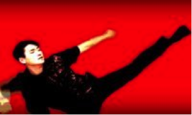<br /><br />
								Status: Co-founder of UMBC Wushu, Former UMBC Wushu Coach<br />
								Specialized in: Changquan (long fist), gunshu (staff), daoshu (broadsword), jiujiebian (nine-section whip)<br /><br />
								One of the co-founders of UMBC Wushu, as well as a long-time student of US Wushu Academy, Tim is an enthusiastic and avid performer, and was an early contributor to the club’s activities, including coaching and performing.  He has also been training in other areas of martial arts, including sparring.  Very dedicated to his art, he knows what looks good and sells for performance value, due in no small part to his training in modern Wushu.  He has been pursuing a filmmaking career, namely crossing the genres of action/martial arts and comedy.
								<br /><br /><br />
								<b>Dennis Shyu</b><br /><br />
								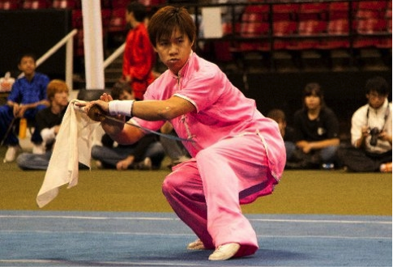<br /><br />
								Status: Former UMBC Wushu Coach, retired and veteran athlete, injured<br />
								Specialized in: Nanquan (southern fist), gunshu (staff), daoshu (broadsword)<br /><br />


								Résumé:
							<ul>
								<li>2007 US Wushu B Team Member – 2nd place Nanquan</li>
								<li>15th Annual Wushu Collegiates Gold Medalist – 1st place in Nandu Male Southern Fist</li>
							</ul>
							One of co-founders and early coaches of UMBC Wushu, Dennis is a long time Wushu athlete and continues to support the athletes of UMBC Wushu today.  During his coaching, he has stressed the execution of clean form and technique over pure wild performance.  He currently lives on the West Coast and is pursuing a culinary career (cooking, yay!).

							<br /><br /><br />

								<b>Ching-yin "Bee" Lee</b><br /><br />
								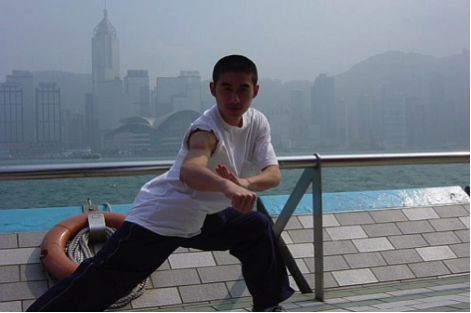<br /><br />
								Status: Former UMBC Wushu Coach<br />
								Specialized in: Nanquan (southern fist), Nangun (southern staff), Nandao (southern broadsword), kickboxing

								Résumé:
							<ul>
								<li>2003 US Wushu B Team Member – 2nd place Nanquan, 2nd place Nangun</li>
								<li>2004 Pan American Wushu Games Silver and Bronze Medalist – 2nd place Nangun, 3rd place Nanquan</li>
								<li>2005 US Wushu B Team Member – National Nanquan and Nangun Champion (1st place Nanquan, 1st place Nangun)</li>
							</ul>
							Before his involvement with modern Wushu, Bee Lee had a traditional foundation in Hung Fut.  Hailing from O-Mei Wushu Center, Bee has established himself as an experienced modern Wushu athlete, and sought out training in Guangdong, China, for specialization in Nanquan.  He is two-time consecutive US Wushu Team member, a prominent collegiate level coach, as well as an in-depth and observational critic of the sport.  Bee has also studied Tai Chi, Bagua, Xingyiquan, Yiquan Standing Meditation, boxing, kickboxing, wrestling, BJJ, and Sanshou to a very intensive level, and is currently managing his own martial arts school, GOSU Institute of Chinese Martial Arts.


								</div>


								      </span></p>
								   </div>
							</div>
						</section>

							<section id="five">
								<div class="container">
									<h3>Gallery</h3>
									<div class="features">
										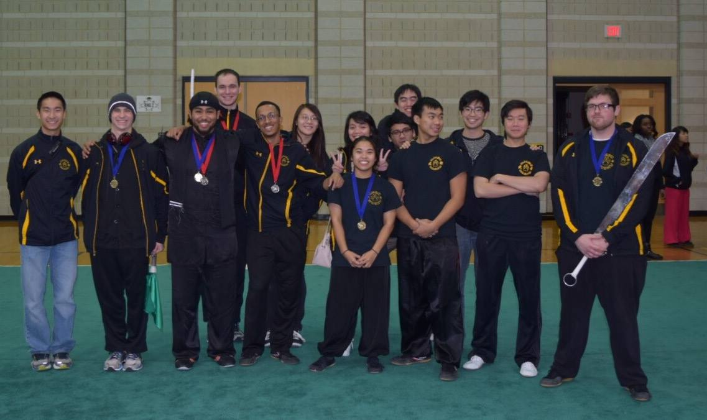
										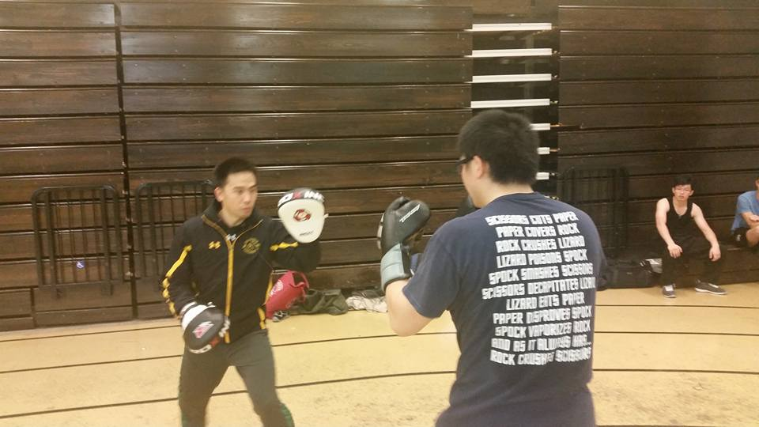
										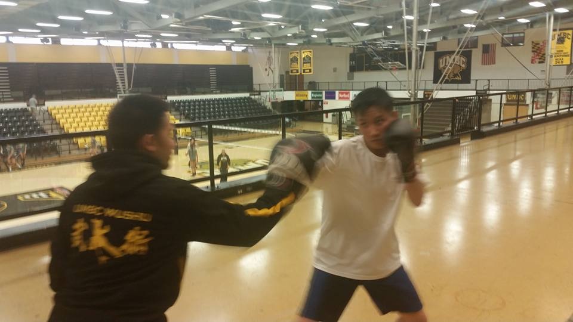
										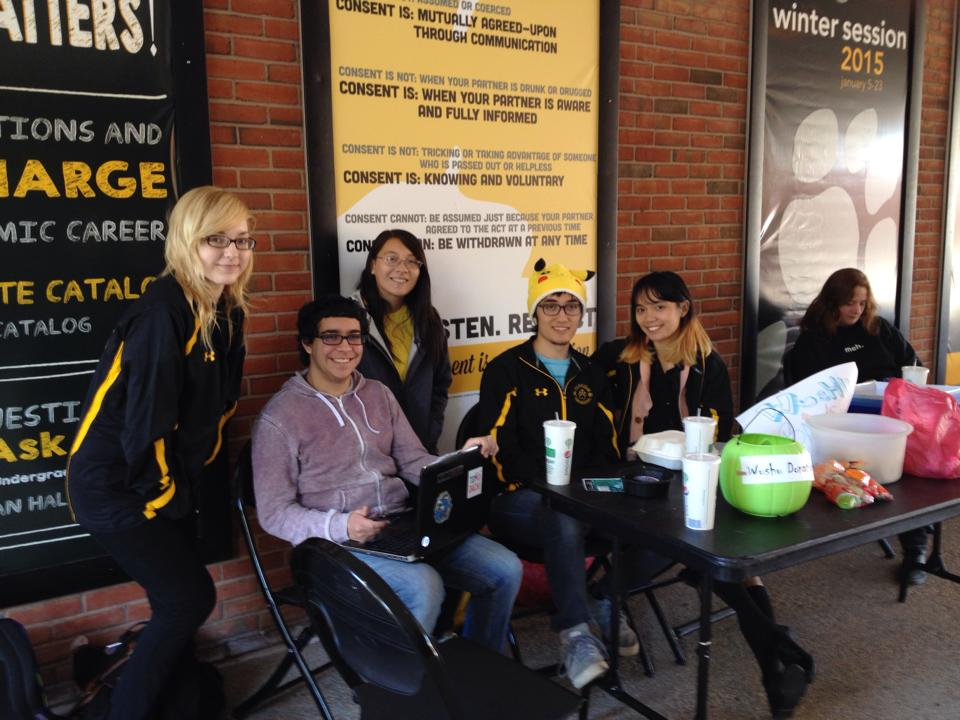
										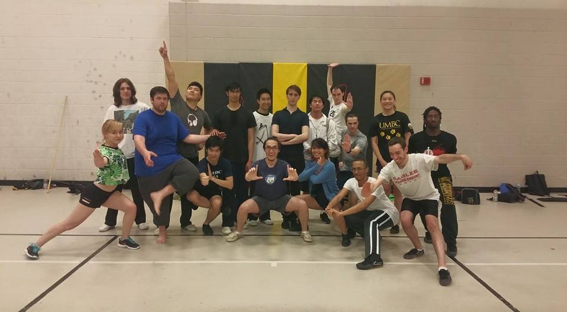
										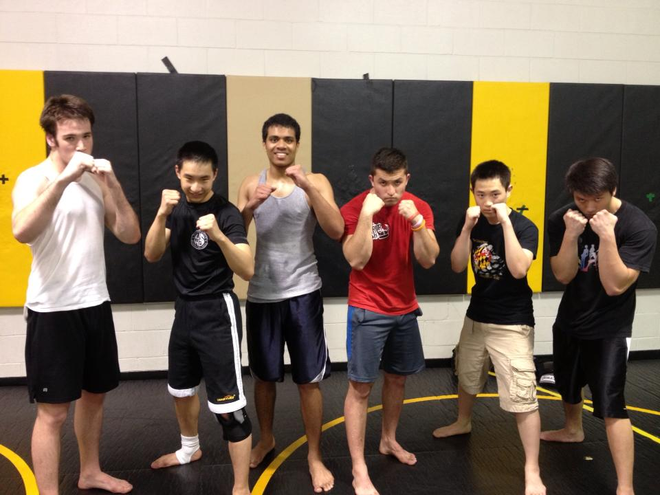
									</div>
								</div>
							</section>

							<section id="six">
								<div class="container">


									<h3>FAQ</h3>
									<div class="whitetxtbox">
									     <p class="paragraphtxt"><span class="paragraphtxt">
									<div style="height:300px;width:800px;border:1px solid #ccc;font:16px/26px Georgia, Garamond, Serif;overflow:auto;">
									<b>What is Wushu?</b><br /><br />

									Wushu (武术； wǔshù) literally means, “martial art” (武； martial, 术； method/art)， and is used as an umbrella term to encompass all the various Chinese martial arts.  When people say Wushu, they specifically mean modern/contemporary Wushu, a standardized way of teaching Chinese martial arts for sport and competitive purposes.  Modern Wushu is divided into two disciplines; taolu (套路； tàolù)，the practice of forms and sequences, and Sanshou (散手； sànshǒu)， the practice of freestyle sparring and scientific martial applications.<br /><br />


									<b>So what’s the difference between Wushu and Kung Fu?</b><br /><br />

									Wushu is actually the generic term for ALL Chinese martial arts, but when people say Wushu, they usually refer to modern/sport Wushu.  "Kung fu" （功夫；gōngfu） in Chinese means "skill/effort", and is the concept of attained skill through hard work, but it's been mistranslated worldwide as the name of Chinese martial arts.  Modern Wushu is a standardized sport for competition, derived from the more traditional "kung fu", which is more focused on inner development and self-defense.<br /><br />

									<b>What is the difference between Wushu and Taekwondo (and/or Karate)?</b><br /><br />

									Wushu is indigenous to China, whereas Taekwondo is a contemporary standardization of Korean martial arts, and Karate was developed from the Okinawan Islands of Japan.  In terms of forms work, Chinese martial arts are generally characterized with more complex, fluid and continuous movements, as opposed to the more concise and rigid, “one-two” rhythm of Karate and Taekwondo movements.<br /><br />

									<b>What should I bring/wear to practices?</b><br /><br />

									Please come dressed in nonrestrictive clothing (sweatpants, etc.), as Wushu, like any other form of martial art, is a physically demanding activity. For those planning on practicing regularly, see the officers about buying the standard Feiyue Wushu shoes required for training. REQUIRED EQUIPMENT (for Sanshou practices): From the start of Sanshou practices, EVERYONE is required to have:<br />

									Handwraps – 180" is recommended for standard adult size, unless other members require certain lengths depending on their hands/wrist girth
									(Boxing) training gloves – 12 oz. is the recommended number, but if members already have their own gloves, then that's fine too.<br /><br />

									<b>What kinds of styles/forms can you learn in Wushu?</b><br /><br />

									Because Wushu is a general term for all Chinese martial arts, many styles exist, including ones that even the greatest masters have never heard/known of, and those that have been unfortunately lost or forgotten due to the sacking of historical literature and materials.<br />
									All beginners start off learning basic Changquan (长拳；chángquán， long fist)，the standard/“main” style of modern Wushu, which is characterized by extended, plain postures, and is derived from northern styles of Chinese martial arts.  After members advance through the first tier of our curriculum (beginner Changquan routine, beginner staff routine, and 1 beginner short weapon form of your choice), choices are available to specialize in specific styles:<br />

									Changquan (continued) – more complex, fluid and continuous movements with more emphasis on aesthetics for performance and competition.
									Nanquan (南拳；nánquán， southern fist) – style of modern Wushu derived from southern styles of Chinese martial arts, characterized by more compact, “hard” techniques, and shouts.
									Taijiquan (太极拳；tàijíquán) – better known as Taichi, an “internal” style of Wushu, characterized by more meditative focus with more “soft”, subtle body mechanics.
									Advanced practitioners will learn an additional “traditional” Wushu style/form of their choice, based on the standardization of modern Wushu forms.<br />

									UMBC Wushu also offers the opportunity to learn Chen Style Taijiquan as a facet of traditional Chinese martial arts.  This is separate from modern Wushu practices, to encourage more all-around understanding of CMA, and is open to all members regardless of Wushu or Taichi experience.<br /><br />

									<b>Do you have to pay to be in the UMBC Wushu Club?</b><br /><br />

									Nope! There is no tuition fee; all members are free to join and practice of their volition! HOWEVER, we DO recommend the purchase of equipment for regular training. As members advance in their practices, further equipment will be required for personal use (weapons for advanced forms work, sparring gear for Sanshou). All equipment purchases can be made either through the club or by your own discretion (please see the club officers and/or president for purchasing options).<br /><br />

									<b>What exactly do you learn in Sanshou (sparring)?</b><br /><br />

									Chinese Sanshou is the idea of applying and adapting ideas of Chinese martial arts in a sparring/free fighting environment.  Fighting techniques are divided into four general elements of fighting, as covered in Chinese martial arts training: kicking (踢；tī)， punching (打；dǎ)， takedowns (摔；shuāi)， and grappling (拿；ná)。   Sport Sanshou is comprised of simple yet efficient kicks, punches, and takedowns to be used in full-contact.  However, our Wushu/Sanshou coach also includes the practice of grappling, as well as training with more of an emphasis on self-defense/street fighting situations.<br /><br />

									<b>Do you already have to be a Wushu/Taichi member to join Sanshou practices?</b><br /><br />

									Not at all!  Our Wushu/Sanshou coach encourages an “open policy” for Sanshou practices, meaning anyone, regardless of martial arts background or experience, can join!  This is to encourage the promotion and better development of real martial arts in general.<br /><br />

									<b>Where/When does UMBC Wushu practice?</b><br /><br />

									Our practice schedule is dependent on RAC‘s staff distribution of reserved time and space.  Per notice and information given to the club president and officers, we will have a consistent schedule of “official” practices throughout the semester, as well as additional “unofficial” practices managed personally by the coach.  If you are late or have trouble finding us, contact the club president, officers, or the coach by cell.<br /><br />

									<b>Why learn contemporary Wushu when I can study traditional?</b><br /><br />

									Contemporary Wushu was created by traditional Chinese martial arts masters themselves, with the goal of being able to share and teach to the masses.  Traditional Chinese martial arts, while very in-depth, is very complex and takes a long time to learn, as opposed to contemporary Wushu which has a simplified yet clear and standard way of teaching.  Here at UMBC Wushu, our Wushu coach teaches “modern with a traditional emphasis”, meaning that we use the standard teaching material of modern Wushu, while at the same time sharing some knowledge of traditional principles behind the original movements at the basic level (explanation of body mechanics, martial ideas and applications, etc.).<br /><br />


									</div>


									    </span></p>
									   </div>


								</div>
							</section>

							<section id="seven">
								<div class="container">
									<h3>Contact</h3>
									<p>Facebook: <a href="https://www.facebook.com/groups/umbcwushu/">https://www.facebook.com/groups/umbcwushu/</a><br/>
										Email: <a href="mailto:wushu@umbc.edu">wushu@umbc.edu</a></p>
								</div>
							</section>
					</div>

					<section id="footer">
						<div class="container">
							<ul class="copyright">
								<li>Design: <a href="http://html5up.net">HTML5 UP</a></li>
							</ul>
						</div>
					</section>

			</div>

		<!-- Scripts -->
			<script src="assets/js/jquery.min.js"></script>
			<script src="assets/js/jquery.scrollzer.min.js"></script>
			<script src="assets/js/jquery.scrolly.min.js"></script>
			<script src="assets/js/skel.min.js"></script>
			<script src="assets/js/util.js"></script>
			<script src="assets/js/main.js"></script>

	</body>
</html>
